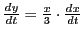
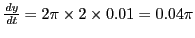
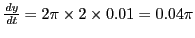
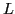
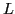
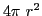
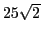
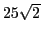

Next: Change of variable Up: Rates Previous: The derivative considered as Contents Index
Solution. Apply the above rule.
First step. Draw the figure. Let  = distance of the man from
the foot and
= distance of the man from
the foot and  = his distance from the top of the tower at any instant.
= his distance from the top of the tower at any instant.
Second step. Since we have a right triangle, .
Third step. Differentiating, we get
, or,
,
meaning that at any instant whatever
(Rate of change of  ) =
(rate of change of
) =
(rate of change of  ).
).
Fourth step.
Solution. First step. Plot the parabola.
Second step. .
Third step. , or, . This means that at any point on the parabola (Rate of change of ordinate) = (rate of change of abcissa).
Fourth step.
ft. per second,
 ,
,
,
,
,
,
Fifth step. Substituting back in the above, ft. per second.
From the first result we note that at the point
 the ordinate changes twice as rapidly as the abscissa.
the ordinate changes twice as rapidly as the abscissa.
If we consider the point instead, the result is ft. per second, the minus sign indicating that the ordinate is decreasing as the abscissa increases.
We shall now solve this using SAGE.
[fontsize=\small,fontfamily=courier,fontshape=tt,frame=single,label=\sage]
sage: t = var("t")
sage: x = function("x",t)
sage: y = function("y",t)
sage: eqn = 6*y - x^2
sage: solve(diff(eqn,t) == 0, diff(y(t), t, 1))
[diff(y(t), t, 1) == x(t)*diff(x(t), t, 1)/3]
sage: s = sqrt(x^2+y^2)
sage: diff(s,t)
(2*y(t)*diff(y(t), t, 1)
+ 2*x(t)*diff(x(t), t, 1))/(2*sqrt(y(t)^2 + x(t)^2))
This tells us that and
Solution. Let  = radius and y = area of plate. Then
,
,
That is; at any instant the area of the plate is increasing
in square inches times as fast as the radius is
increasing in linear inches.
= radius and y = area of plate. Then
,
,
That is; at any instant the area of the plate is increasing
in square inches times as fast as the radius is
increasing in linear inches.
 ,
,
.
Substituting in the above,

sq. in. per sec.
,
,
.
Substituting in the above,

sq. in. per sec.
Solution. Let  = distance of boy from a point directly
under light , and
= distance of boy from a point directly
under light , and  = length of boy's shadow.
By similar triangle,
,
or
.
Differentiating,
;
i.e. the shadow is lengthening
as fast as
the boy is walking, or ft. per minute.
= length of boy's shadow.
By similar triangle,
,
or
.
Differentiating,
;
i.e. the shadow is lengthening
as fast as
the boy is walking, or ft. per minute.
Ans.  in. per sec.
in. per sec.
Ans. .
Ans. .
Ans. in. per sec.
Ans.  and
and  .
.
Ans. .
Ans. At .
A point generates each of the following curves (problems 12-16). Find the rate at which the arc is increasing in each case:
Ans. .
Ans. .
Ans. .
Ans. sq. in. per hour.
Ans.  sq. units per sec.
sq. units per sec.
Ans. (a)  times as fast; (b) cu. in. per sec.
How fast is the surface increasing in the last case?
Ans. (a)
 ft. per min.;
(b) when
 ft. from wall;
(c) when
ft. per min.;
(b) when
 ft. from wall;
(c) when  ft. from wall.
ft. from wall.
Ans.  ft. per minute.
ft. per minute.
Ans. miles per hour.
Ans. (a) Diminishing miles per hour; (b) increasing miles per hour; (c) P.M.
If the sun is just rising in the east, find how fast the shadow
 of the locomotive is moving along the wall of the station
at the instant it reaches the end of the wall.
of the locomotive is moving along the wall of the station
at the instant it reaches the end of the wall.
Solution. , , or . Substituting this value of in , we get . Now miles per hour = ft. per sec., and . Substituting back in the above, we get , or, ft. per second.
Ans. miles an hour.
Ans.  miles an hour.
miles an hour.
Ans. ft. per sec.
Ans. ft. per sec.
Ans. ft. per min.
Ans. miles per min.
Ans. miles an hour.
Ans. (a) cm. per sec.; (b) cm. per sec.
Ans. miles per hour.
Ans. ft. per sec.
Ans. yd. per min.
Ans. in. per mm.
david joyner 2008-08-11